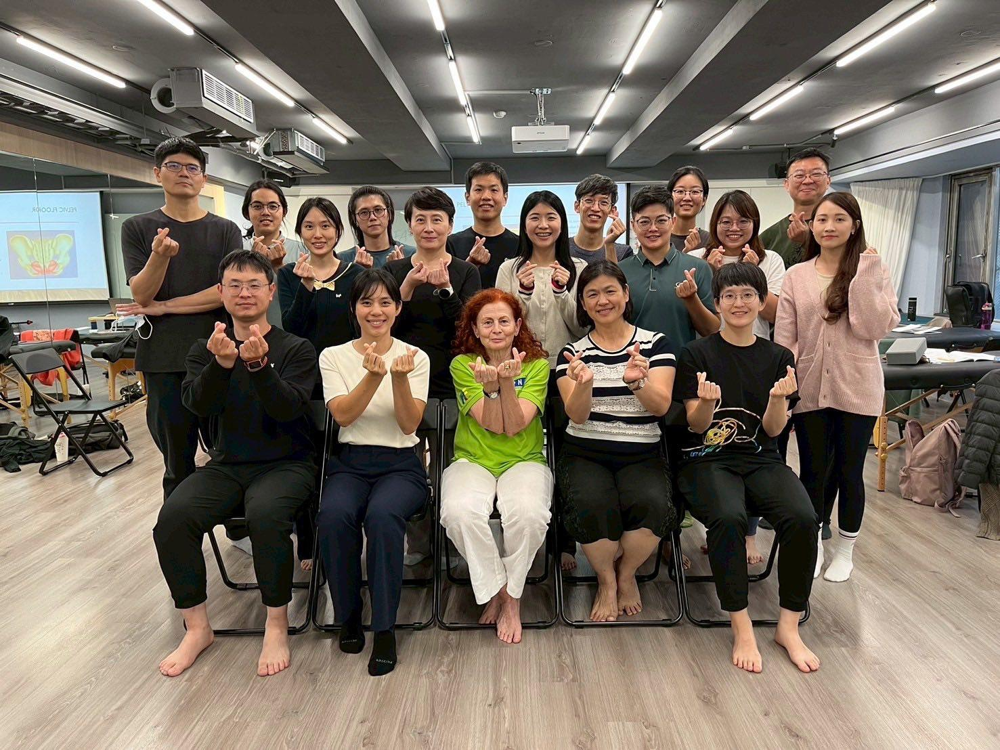
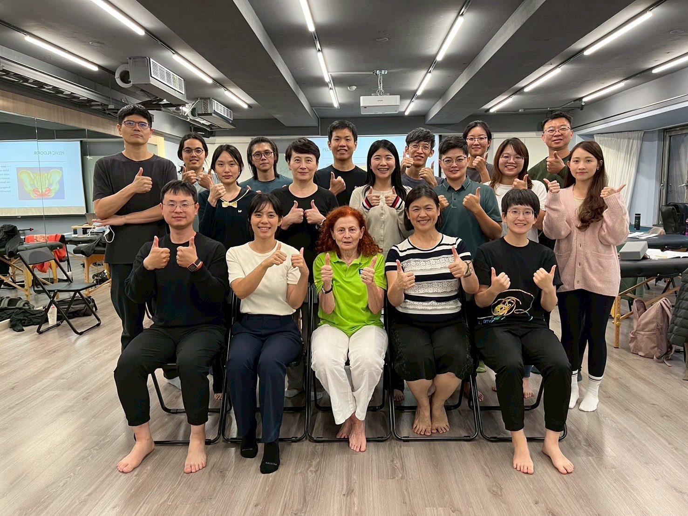
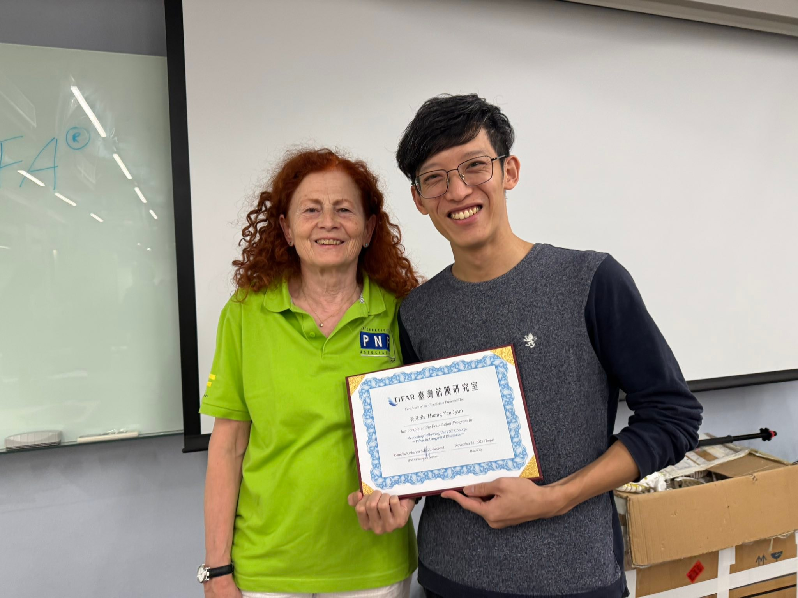

繼上次8月場TMJ，這次11月場的骨盆終於來了！有了上次的基礎，這次上課感覺更快…
繼上次8月場TMJ，這次11月場的骨盆終於來了！有了上次的基礎，這次上課感覺更快上手，也更快抓到操作的訣竅，對於肩胛骨、骨盆的雙軸向本體感覺促進技術掌握度大大提升！
Connie老師真的是個非常可愛又很嚴格的老奶奶，上課一直被盯👀，該練習到時候在討論或是該休息的時候在練習通通都被喊停😆😆😆
透過這兩次的工作坊真的好好學習、認識了PNF Concept 這個厲害的學門技術，老奶奶叫我明年要參加Basic Course，但10天實在太硬核毋湯毋湯🤣🤣🤣
#PNFworkshop
中醫師 黃彥鈞


